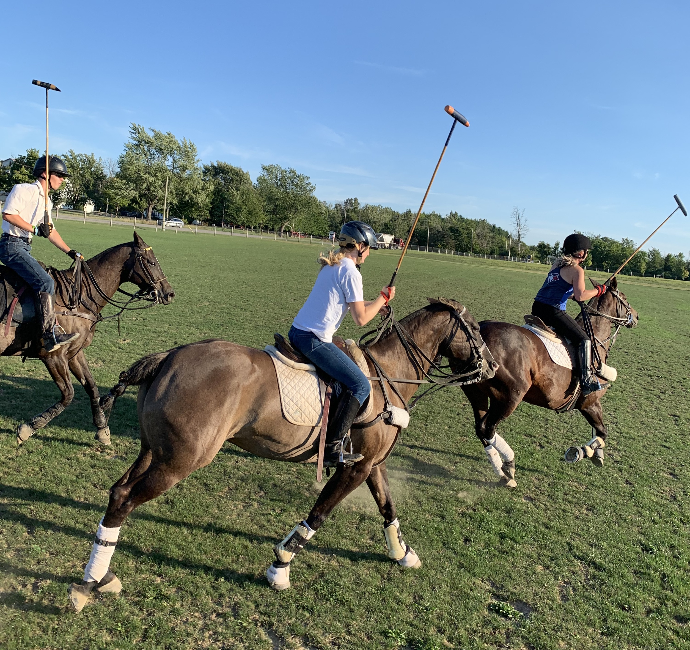

See more information on..
I have always loved horses! I had my very first proper horse riding lesson when I was 6 years old. Although I did not start properly taking consistent lessons till about 5 years ago. This is when both me and my family realized this was not a phase but a love. I primarily do jumping, but I have tried western riding and polo as well. I have competed in two complete show seasons. One being in 2019, where I competed in two jumper divisions; 2 foot and 2 foot 3 jumpers, I finished the season with 3rd place overall in both divisions. My second season was this past summer, where I competed in the 2 foot 6 hunters. I finished the season first overall as I got champion in all my shows. My overall goal is to eventually do some Eventing (which consists of Dressage, stadium show jumping and Cross country) but for now I am quite happy having riding as a pleasure thing. I have found that riding and horses to be my main outlet. When I go to the barn, I forget about all of my worries and stresses and I am just able to let go and enjoy being outside and with the animals. The best part of the sport for me is being able to bond with an animal. I have ridden many horses over the years but there have definitely been a few really special ones to me. Such as my first long term partner Shiney and my current partner Oatie.

Check Out My instagram for more Pictures from my Horsey Journey @equine.morgan6